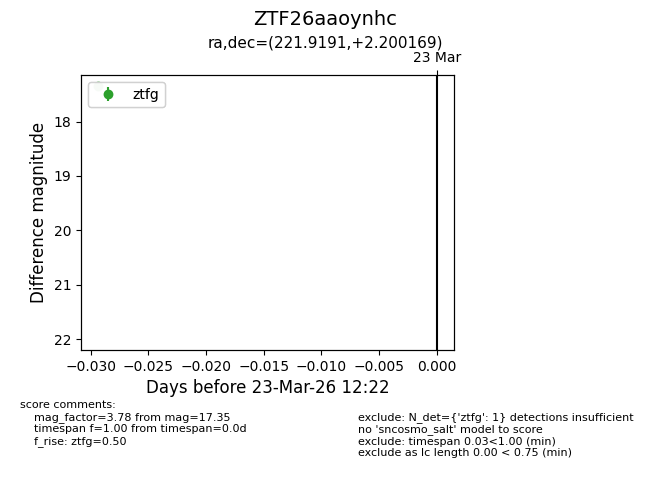
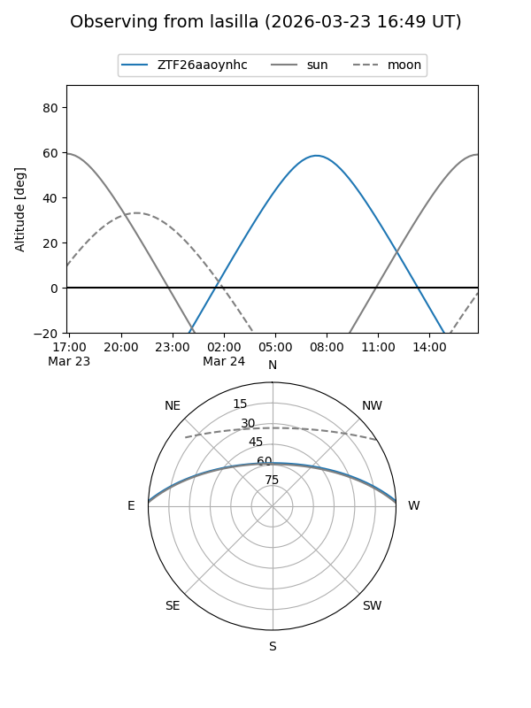
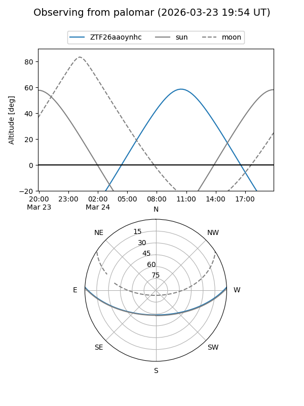

ZTF26aaoynhc
Target ZTF26aaoynhc at 2026-03-23 12:24
Aliases and brokers:
FINK: link
Lasair: link
ALeRCE: link
alt names
ZTF26aaoynhc (ztf,fink_ztf)
Coordinates:
equatorial (ra, dec) = 221.9191,+2.20017
equatorial (HMS+DMS) = 14:47:40.59,+02:12:00.61
galactic (l, b) = (356.0545,+52.64426)
Flags:
Photometry:
last ztfg=17.35
1 ztfg detections
Lightcurve

Visibility


Additional plots